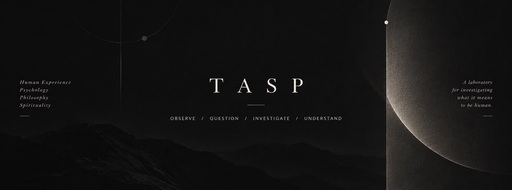

WITHIN EVERYONE / WITHOUT YOUExplore TASP
THE IDEA BEHIND TASP
An inquiry into
being human.
A personal intellectual laboratory for exploring how we think, feel, believe, and make meaning. Here, an observation becomes a question. A question becomes an investigation. And an investigation becomes something we can examine together.
For the curious, the reflective, and anyone who finds a little of themselves in what they read.
ObserveQuestionInvestigateUnderstand
FOLLOW YOUR CURIOSITY
Where would you like to begin?
IDEAS TO SPEND TIME WITH
The writings.
OBSERVATION, STILL UNFOLDING
From a moment to a question.
Two connected explorations, each moving through Observe, Question, and Develop.
A DIFFERENT WAY OF KNOWINGSome things
Some things
arrive as poetry.
A quieter space for the things that are felt before they are understood.
Some chapters are loud.FROM “A PHASE, NOT AN ENDING”
Others are silent.
Silence isn’t loss—
it’s transformation.